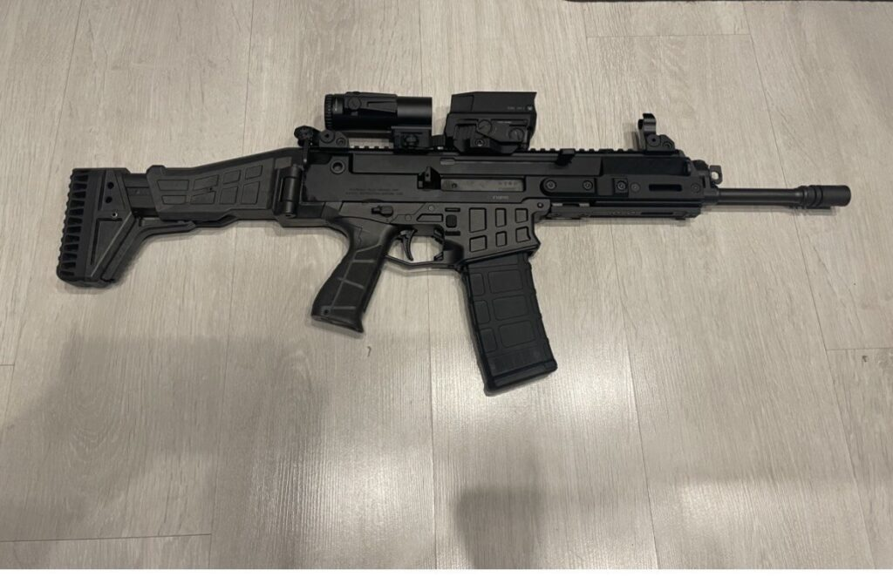
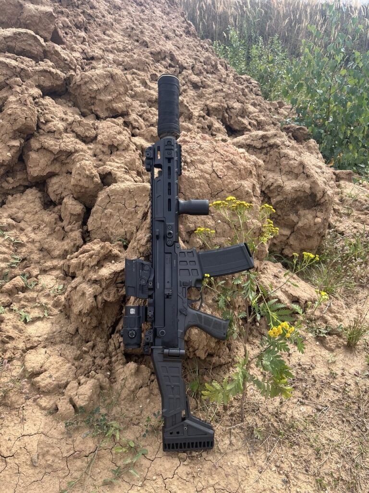
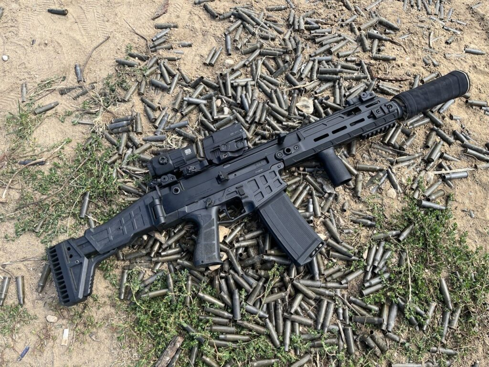
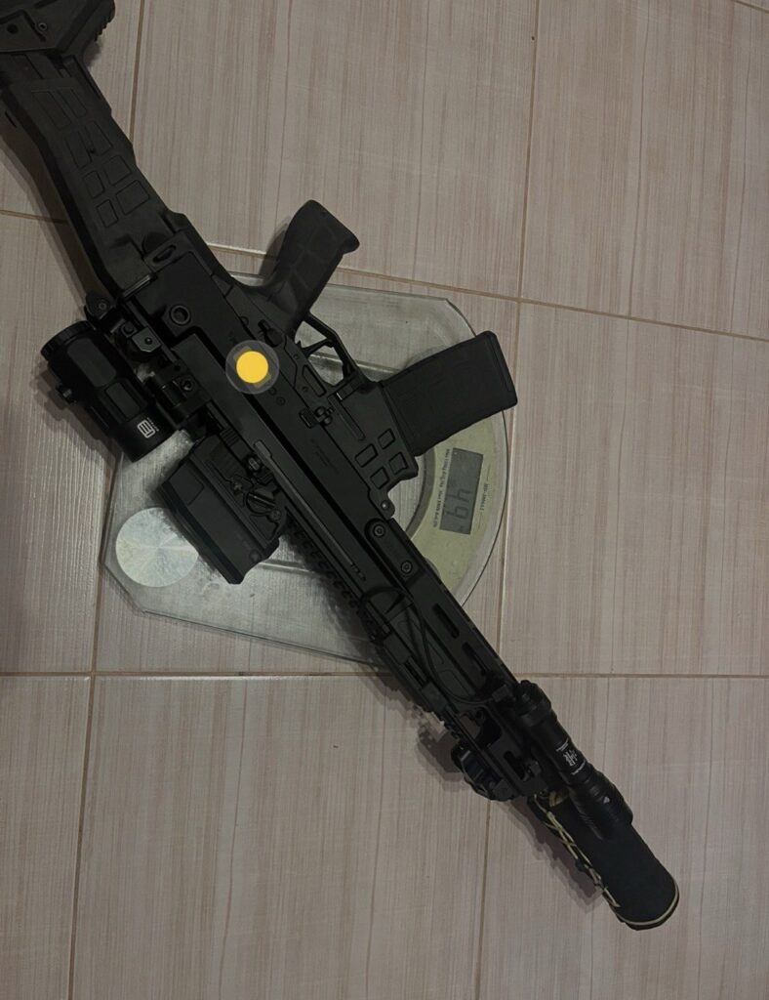
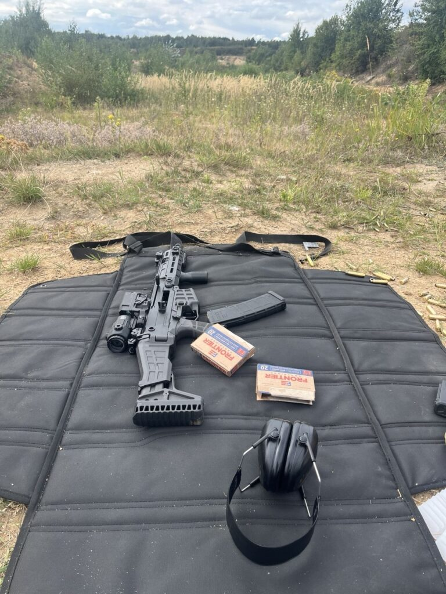
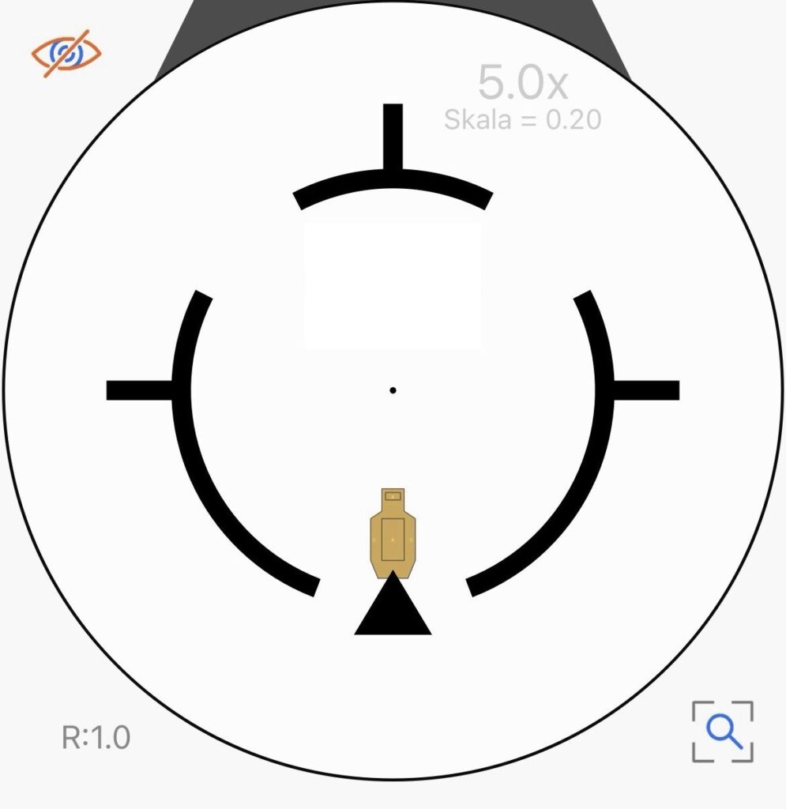
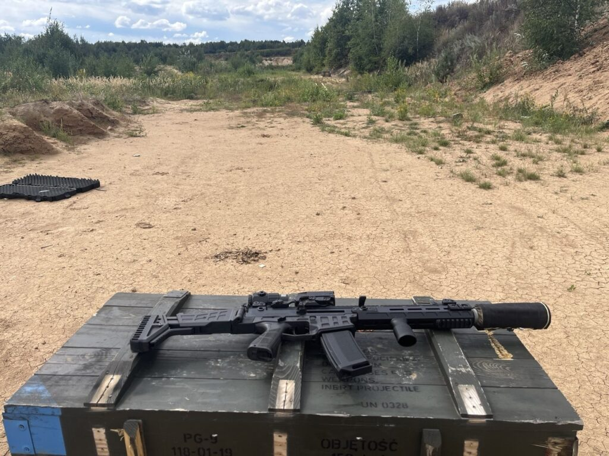

CZ Bren 2 11” po kilku tysiącach strzałów — moja opinia.
2026-09-02
Ale od początku — dlaczego zdecydowałem się akurat na Brena?
Jako osoba leworęczna szukałem przede wszystkim czegoś z obustronnymi manipulatorami. Zrzut zamka i dźwignia przeładowania w standardzie AR nie bardzo mi odpowiadały.
Na czele stawki stanęły: APC223, SCAR, Bren 2 — no i oczywiście Grot, ale on szybko został skreślony z wiadomych powodów.
Po długich namysłach to on wybrał mnie. Pojawiła się bardzo atrakcyjna używana sztuka, więc nie mogłem odmówić. 🙂
W Polsce jest bardzo mało rzeczowych recenzji na jego temat. W USA Bren konkuruje z MCX-em, SCAR-em, DD czy APC. Zapytacie: ale jak to? Przecież tamte konstrukcje to zupełnie inna półka.
Tak się może tylko wydawać. Jako Polacy płacimy frycowe za import. W USA MCX kosztuje jedynie około 25% więcej od Brena, a DD jest prawie w tej samej cenie. Można więc założyć, że są to bezpośredni konkurenci.
Konfiguracja i modyfikacje
Po wstępie czas na mięso. Jak widzicie, klasyczna wersja 11” z krótkim łożem.

Mój naturalny chwyt był nieco dalej, więc od razu pomyślałem o aftermarketowych zmianach. Fabryczne łoże jest krótkie i ma mało slotów M-LOK. Przy okazji zakupu łoża od HBI wziąłem także spust i regulator gazowy.
Fabryczny spust nie jest zły, ale ma zdecydowanie za długi overtravel. Ten od HBI trochę polepsza jego pracę i właśnie poprawia jego największą bolączkę — redukuje overtravel o 35%. Dwustopniowy, bardzo przyjemny spust z oporem około 2 kg. Nie jest to na pewno półka Geissele SSA-E czy TriggerTecha Diamond, ale jest o niebo lepszy od klasycznego chamskiego milspeca.

A po co regulowany tłok?
Bren 2 ma w standardzie regulator, ale moim zdaniem jest on trochę bez sensu z perspektywy cywilnego użytkownika. Są trzy pozycje: zwykła, dodatkowy gaz na zabrudzenia i totalna odcinka. A gdzie ustawienie pod puszkę, ja się pytam?
Przy założeniu MARS-a, który nie jest przepływowy, było widać mocne przegazowanie. Łuski były trochę przygniecione, co jest efektem zbyt szybkiego cyklu pracy.
Po założeniu regulatora od HBI (który ma pozycję +, normal oraz −) problem zniknął.

Ergonomia i wykonanie
Manipulatory są kozak. Dla lewaka jak znalazł. Najbardziej odpowiada mi zrzut zamka wewnątrz kabłąka. Dźwignie przeładowania można przełożyć na drugą stronę. Bezpiecznik także dwustronny w standardzie.
W zestawie są też metalowe przyrządy Troy. Bardzo jakościowe i jako backup spełniają swoją rolę. Kolba składana (fanboye AR-a mogą zacząć płakać w kącie) z 3-stopniową regulacją. Raczej wysokie osoby nie będą miały problemu z długością.
Co do niezawodności i wykonania: przez 2–3 tys. pestek bez czyszczenia nie zaciął się ani razu. Nadal przeładowuje na regulatorze z mniejszym otworem nawet bez puszki.
W USA czy na froncie ukraińskim jest niesamowicie chwalony. Nie mam pojęcia, dlaczego w Polsce jest tak mało popularny — chyba przez kult AR-a.
Jest to jeden z lżejszych tłokowców. Nie ciąży do przodu, co jest benefitem cienkiej lufy. Waży poniżej 3 kg. Jak na tłokowca to bardzo dobry wynik.

Z całym szpejem nie przekracza 5 kilo!
Cały zestaw:
- Streamlight HLX Pro
- BT MARS
- Vortex UH-1
- EOTech G45
Wady
Oczywiście, żeby nie było tak kolorowo, jest też kilka wad.
Celność
Krótka, cienka lufa, a do tego tłok — wszystkie cechy sprzyjające temu, żeby nie był wybitnie celny. Na podstawowej kulce wykręca 3–4 MOA. Na premium może uda się zejść do 2 MOA, a od święta do 1,5.
Na pewno nie jest to sprzęt do wycinania koniczynek. Nie płaczę z tego powodu, bo nie tego od niego oczekiwałem. Z lufy 11” i tak strzelam w większości przypadków na max 300 m, więc jest to wystarczająca bojowa precyzja.

Raz zabrałem go na 550 m i uwaga — po wstrzeleniu się trafiałem w popiersie C-zone praktycznie wszystko.
Na takim dystansie z krótkiej lufy opad pocisku jest już spory, więc trzeba było celować wyraźnie ponad celem.
Poniżej fotka poglądowa, pokazująca mniej więcej punkt celowania:

Precyzję na 400+ bardziej ogranicza system celowania (holo + magnifier), który stworzony jest do krótszych dystansów, ale warto czasem sprawdzić limity swojego zestawu. Wbrew powszechnej opinii broń nie musi być submoa i mieć metrowej lufy, żeby trafiać na taki dystans.
Wracając do sedna — prawdopodobnie każdy gazowiec w tej półce będzie od niego celniejszy, ale ta celność jest absolutnie wystarczająca.
Kolejną wadą są ograniczone możliwości modyfikacji. To nie AR. Tutaj nie ma dziesięciu różnych chwytów, trzydziestu spustów i dostępności części na każdym rogu. Modyfikacje często wymagają ściągania rzeczy z USA. Jeśli ktoś lubi zmieniać każdą śrubkę, to na pewno nie jest to sprzęt dla niego.

Podsumowanie
Podsumowując: po lekkim dopieszczeniu (głównie zmiana łoża) Bren 2 jest bardzo dobrym karabinkiem. Świetnie wykonany, ekstremalnie niezawodny wół roboczy. W tej cenie (10k) możemy oczekiwać jakości, która sprzedawana jest w Polsce za 50, a może nawet 100% więcej. Europejskie dobre marki mają to do siebie, że płacimy głównie za broń, a nie za podatki i koszty importu. Czy kupiłbym go jeszcze raz? Zdecydowanie!
red. Wojtas 🙂